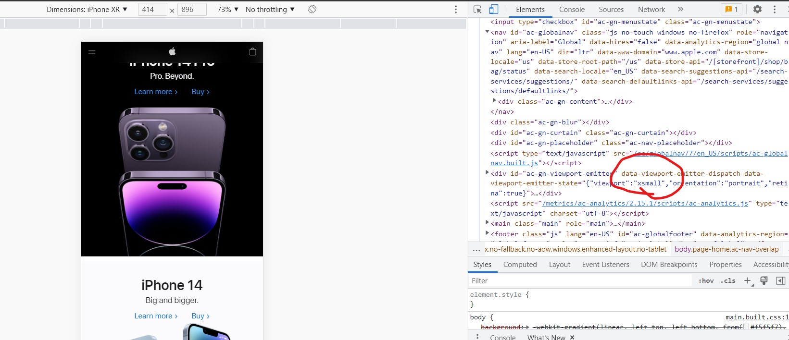
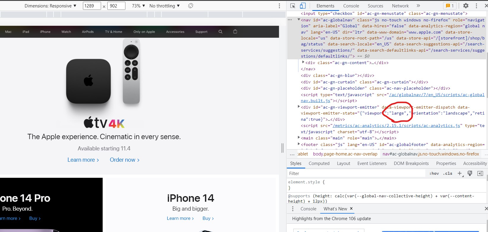

In deze opdracht kijken we naar het verschil in de broncode van een website op 2 verschillende momenten en 2 verschillende venstergroottes
 Hierboven zien we wanneer we de schermgrootte aanpassen dat in de code zelf waarden aangepast worden waardoor de website een andere layout krijgt